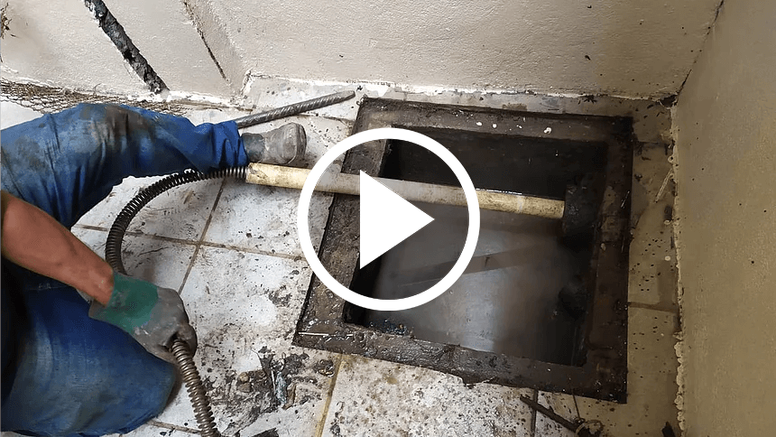

Desentupimento de Esgoto
Removemos entupimentos com rapidez e segurança, evitando mau cheiro e refluxos indesejados.
A Desentupidora Principal é a maior referência em soluções de desentupimento em Pernambuco. Trabalhamos com esgoto, pia, vaso sanitário, água pluvial e fossa, oferecendo serviços rápidos, seguros e sem sujeira.
Nossa equipe é altamente qualificada e utiliza equipamentos modernos para garantir resultados eficientes e duradouros. Com atendimento 24 horas, prezamos sempre pela confiança, qualidade e satisfação total dos nossos clientes.
Atendemos residências, condomínios e comércios com agilidade, equipamentos de ponta e máximo profissionalismo.
Removemos entupimentos com rapidez e segurança, evitando mau cheiro e refluxos indesejados.
Eliminamos obstruções causadas por gordura e resíduos, restaurando o fluxo normal da água imediatamente.
Serviço rápido, limpo, discreto e eficiente, sem necessidade de quebrar pisos ou paredes.
Desobstrução de calhas, ralos e tubulações pluviais para evitar alagamentos em dias de chuva.
Realizamos esgotamento e limpeza completa de fossas sépticas com máxima segurança e agilidade ambiental.
Esgotamento e limpeza completa de caixas de gordura, essencial para o bom funcionamento da rede.
Limpeza e desobstrução de caixas de passagem, garantindo o fluxo ideal dos efluentes.
Serviços completos em tubulações, ralos e sistemas de esgoto de forma segura e com garantia.
Assista ao nosso vídeo e conheça de perto a tecnologia e o profissionalismo da Desentupidora Principal.

Chegamos rápido! Atendemos em Caruaru e nas cidades de Cupira, Riacho das Almas, Bezerros, Cachoeirinha, São Bento do Una e Palmares.
Nossa frota está estrategicamente posicionada para atender emergências 24 horas por dia, 7 dias por semana. Trabalhamos com total transparência e preço justo.
Solicitar Visita TécnicaChame nossa equipe via WhatsApp e receba um orçamento sem compromisso agora mesmo!